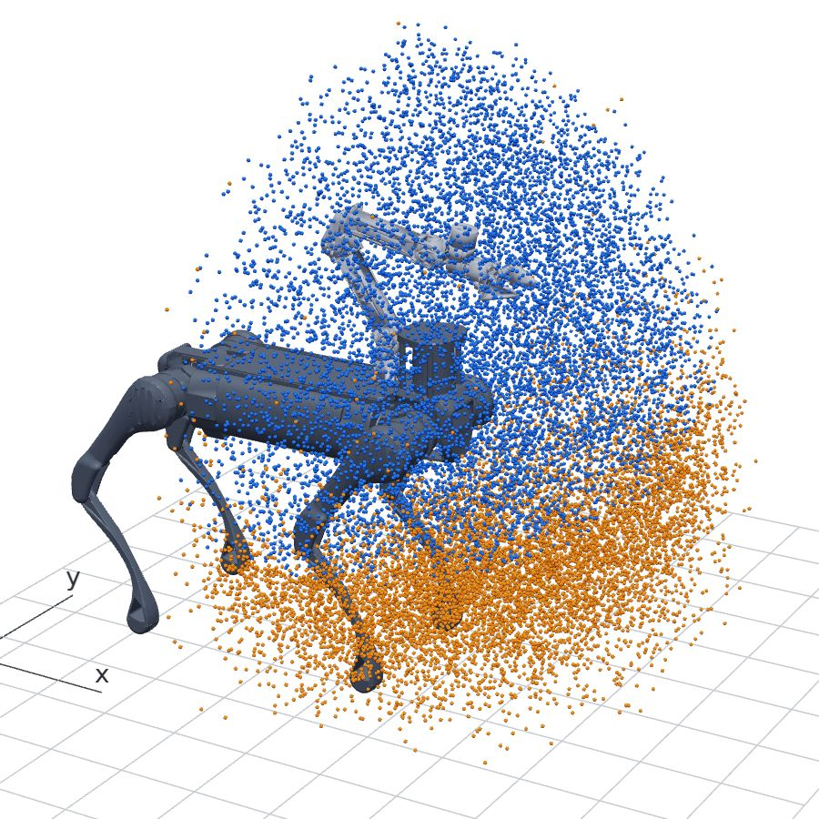
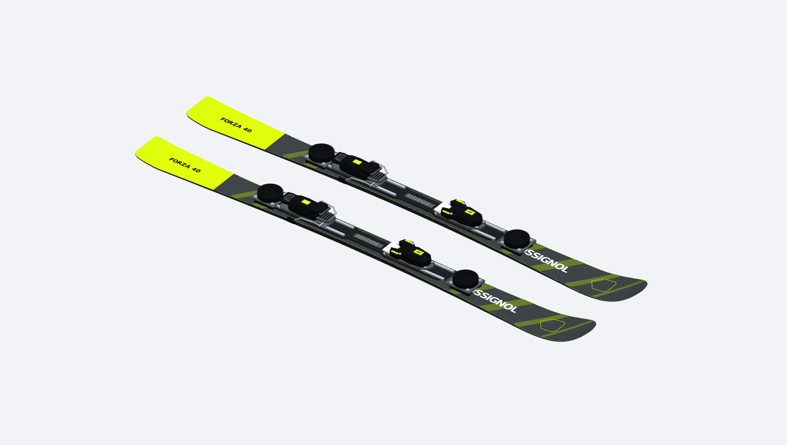

01 / B2ARX · robot learning and deployment
Whole-body control and simulation for B2ARX
I study whole-body control with a Unitree B2 and an ARX R5A arm. The reaching policies combine PPO, teacher–student learning, and observation history, with a separate MuJoCo runtime for deployment. I also use this platform to explore ski-and-pole locomotion, combining parametric equipment models with rigid-body and MPM snow simulation.
我在 Unitree B2 与 ARX R5A 上研究全身控制，结合 PPO、教师—学生学习和历史观测训练到达策略，并维护独立的 MuJoCo 部署工程。同时基于这一平台探索双雪板与单杖运动，将参数化器材建模、刚体接触和 MPM 雪地仿真结合起来。
Methods & tools. Isaac Lab, Newton/MJWarp, PyTorch, and RSL-RL for learning; identified arm dynamics and MuJoCo / TorchScript / ONNX Runtime for deployment; CadQuery, OpenUSD, and MPM for equipment and snow simulation.


The skiing clip shows a simulation prototype; sustained pole-driven motion is still under development.